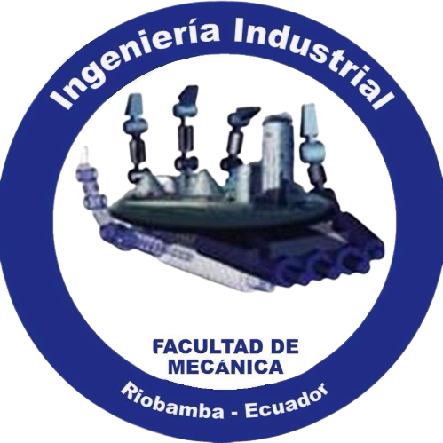

El Congreso Internacional de Ingeniería organizado por la Facultad de Mecánica de la Escuela Superior Politécnica de Chimborazo, es el evento que consolida a la comunidad académica, científica y productiva, a presentar investigaciones, innovaciones, desarrollos tecnológicos, entre otros. En las diferentes áreas mediante ponencias, posters científicos y conferencias magistrales.
Su propósito fundamental es posibilitar un encuentro que facilite la difusión del conocimiento e internacionalización de la ciencia, a la vez proporcionar un espacio que promueva y apoye la generación de nuevas iniciativas, el desarrollo de la creatividad y aprendizaje con el propósito de afrontar problemáticas en el país y ofrecer nuevas alternativas de desarrollo al área ingenieril
Actualmente, la Facultad de Mecánica cuenta con laboratorios tecnológicos para la práctica, experimentación e investigación en temas relacionados a la industria automotriz, industria 4.0, mantenimiento industrial y producción automatizada. La incursión en estas áreas del conocimiento crea la posibilidad de establecer proyectos industriales con una visión empresarial.